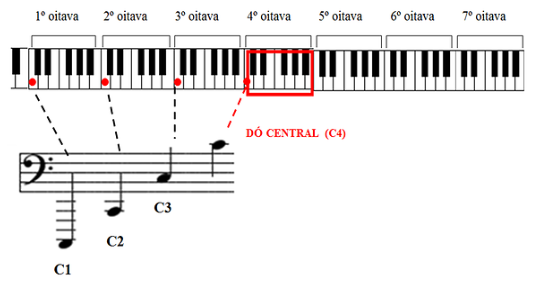

Clave de fá
A clave de Fá é utilizada para representar as notas mais baixas (graves). As oitavas mais graves do piano não tem correspondência na pauta da clave de Sol. É por essa razão que foi criada essa outra clave. A clave de Fá segue a mesma lógica da clave de Sol, só que a localização das notas é um pouco diferente. Aqui, o símbolo é desenhado a partir da 4º linha e indica que sobre esta linha está a nota Fá. Note que essa nota fica entre os dois pontos da figura. Sabendo isso, podemos escrever as demais notas:
Localização das notas na Clave de Fá
No piano, a localização das oitavas fica da seguinte forma nessa clave:
Repare que na clave de Fá existe o mesmo Dó que você viu representado na clave de Sol (Dó central). É um ponto de encontro!
Como essa clave mostra as notas mais graves, no piano ela representa o que você deve tocar com a mão esquerda, enquanto a clave de Sol mostra o que você deve tocar com a mão direita. Por isso, as partituras para piano costumam ter duas pautas (uma para cada clave) simultâneas, já que podemos tocar com as duas mãos ao mesmo tempo.
No violão, utilizamos somente a clave de Sol. Outros exemplos de instrumentos que utilizam a clave de Fá são: contrabaixo, violoncelo, fagote e trombone, bem como as vozes mais graves.
A clave de Fá também é conhecida como clave masculina (ou androclave).
Linhas suplementaresVocê já deve ter percebido que essas pobres 5 linhas da pauta não dão conta de representar toda a extensão de notas que existem nas oitavas. Por isso, também utilizamos linhas suplementares. Essas linhas nada mais são do que a continuação da pauta; elas são usadas para representar notas que ultrapassam limites inferiores e superiores. Observe:
Quando você enxergar esses pequenos tracinhos, tente imaginar a figura abaixo. Continue contando as notas da mesma forma que fazia na pauta: cada espaço ou linha é uma nota diferente.
Ainda há outro recurso para representarmos notas em oitavas muito agudas ou muito graves. É o símbolo “8v”. Na partitura ele aparece assim:
Nessa partitura, o símbolo 8v veio acompanhado da letra “a”, que significa “ acima”. A interpretação não é difícil: o trecho destacado (fá, sol, fá) deve ser tocado uma oitava acima da posição em que está na pauta. Se a ideia é tocar uma oitava abaixo, a letra utilizada é 8vb.
Legal, até aqui você foi apresentado a três recursos que registram as notas e suas oitavas: as claves, as linhas suplementares e o símbolo “8v”. No piano, não há uma regra sobre quando usar um ou outro. Eles são usados a critério do músico, tendo em vista que produzem efeitos idênticos. Observe o exemplo abaixo:
Obs: Apesar de não existirem regras, é sempre conveniente escrever da maneira mais “simples” possível, afinal a partitura existe para ajudar os músicos, não para complicar a vida deles.